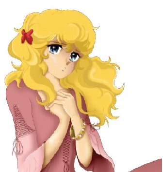
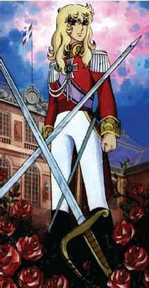
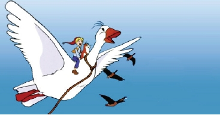

Seksenli yıllarda o kadar çok sayıda çizgi film vardı ki anlatmakla bitmez. Ben daha ziyade çok dikkat çekenleri yazmayı, diğerlerini de kısaca hatırlatmayı istiyorum.
Seksenli yılların çizgi filmleri, hayvanlar ya da aile ile alakalıdır. Sıradan bile sayılabilecek hayatlar anlatılır. Kahramanlar çizgi olmanın dışında aslında bizden biridirler. Biz onlara âşık olur, yakışıklı ya da güzel bulurduk.
Günlük hayattan pek farkı yoktur yaşadıklarının. Zaten eski çizgi filmlerin çoğu böyledir. Öyle absürdlükler, olmayacak şeyler işlenmezdi konularında. Kahramanlarımız da günlük hayattan tipler oldukları için, onların başına gelenler bizim başımıza da gelebilirdi. Belki bu yüzden o zamanki diziler insanlar tarafından içselleştirilebilmiştir.
Uzay gemisine benzer bir araçla, hastalanmış olan dünyalarından, daha sağlıklı bir dünya aramak için yola çıkmışlardı. Kayıp Dünyalar hayli fantastik bir yapımdı. Yalnız, dünyanın merkezinde mi yoksa uzayda mı gezdiklerini tam olarak hatırlamıyorum. Arcadia aradıkları yerin adıydı. Spartacus, Rebeca ve Bob vardı. Şakşak ki gemilerinin adıdır. Ve Arkana vardı. Hayli sürükleyici ve çok kaliteli bir yapımdı. Ve oldukça hoş bir müziği vardı.
Jumbo da Yakari ve Musti gibi “Uykudan Önce” programında yayınlanan çizgi filmlerden biriydi. Yavru bir uçağın maceraları anlatılırdı. Bu yavru uçak havadayken aşağıdaki koyunlar, kuzular “Jumbooo” diye bağırırlardı.
Tom ve Jerry meşhur çizgi filmlerin başında gelir. Jerry hiç çekinmeden yaşadığı evin buzdolabını boşaltır, deliğine taşırdı. Tom elinden ne gelirse yapmaya, yakalayıp yemek için planlar hazırlamaya çalışırdı. Bu çizgi filmde arada bir insanlar oynasa da yüzleri hiç görünmez, sadece bacakları görünürdü.
Woody Woodpecker’ın en önemli özelliği orijinal kahkahasıydı bu kırmızı saçlı mavi ağaçkakanın.
Duffy Duck, Bugs Bunny'nin arkadaşlarından uçuk kaçık bir ördekti. Sürekli bela çıkartır, karşılığında pestili çıkana dek dayak yerdi. Özellikle Bugs Bunny etmediğini bırakmaz, kafasına örsle vurup gagasını ensesinden çıkartırdı.
Speedy Gonzales, Meksikalı bir fareydi, kocaman bir şapkası vardı. En önemli özelliği çok hızlı şeklide koşması, etrafındaki kedilerle dalga geçmesiydi.
Bugs Bunny’nin Elinde sürekli bir havuç bulunur, o dişlek haliyle “aarkidişş” diye konuşurdu. Deliğinden çıkar, maceralara koşardı. Biraz da entelektül bir tipti Bugs Bunny. Sürekli bunu ortadan kaldırmak isteyen belalısı kel kafalı, kısa boylu bir avcı vardı. Bir bölümde av mevsimi açıldığında kendi cinslerinin değerlerine göre ucuza gittiğini görünce Amerika’nın başına türlü belalar açıp değerlerini yükseltmişti. Sonunda ordu araya girmişti de problem çözüldü.
Tweety ise sapsarı tüyleri, kocaman turuncu ayakları ve mavi gözleri ile çok şirindi. Dişi mi erkek mi olduğu bilinmezdi. Bu kuş yaşlı bir nineyle yaşar, kafesinde uslu uslu otururdu. Silvester adlı kediyi görünce “Bir kedi gördüm sanki!” der, kafesinde tepinirdi. Silvester'in derdi bu kuşu yemekti. Tam başaracak gibiyken nine yetişir, Silvester'i kuyruğundan kaldırıp poposuna vurarak Tweety’yi kurtarırdı. O yıllarda “Bir kedi gördüm sanki,” her vesileyle kullanılırdı insanlar tarafından.
Kaptan Mağara Adamı çocukluğumuzun harikulade tiplerinden biriydi. Taş Devri’nin karakterleri Wilma ile Betty gazeteci olmuşlar, her işe burunlarını sokuyorlardı. Kötü adamlar bunları kaçırıyor, kızlar da “İmdat! Kaptan Mağara Adamı yetiş!” diye bağırınca kahramanımız elinde sopası, uçar vaziyette kızları kurtarmaya gidiyordu. Yolda benzini bitip motoru tekler, arada yere düşerdi. En büyük özelliği, baştan ayağa kılla kaplı olması ve ihtiyacı olan bir takım malzemeleri buradan tedarik etmesiydi.
Temel Reis yılların eskitemediği karakterlerdendir. Efsane kaptanımız ve sevgilisi Safinaz bir türlü evlenememiştiler. Safinaz kağıt gibi incecik bir kadındı. Ayrıca pek ayran gönüllü, biri buna baksa bir çiçek verse hemen Temel’i unutup bunların peşinden giderdi. Başı sıkışınca da Temel! diye bağırırdı. Temel Reis bir konserve kutudan ıspanağını yiyince pazıları kocaman şişer ve güçlenirdi. Sonra da Safinaz'ı öpmeye çalışan adamları döver, üzerlerinden tır geçmiş gibi yapardı. Kötü adamların en meşhuru Kabasakal'dı.
Pamuk Prenses ve Yedi Cüceler masalı anonim gibidir. Yazarı tam olarak bilinmemekle birlikte Grimm Kardeşler’e uygun düşmektedir. Pamuk Prenses öldürüleceğini anlayınca kaçarak Yedi Cüceler'in evine sığınmıştı. Bu cücelere kibarlık kuralları öğretmeye çalışırken bir yandan da çeyizini düzüyordu. Sonunda beklediği prens gelip onu bulmuş ve tabii saraya götürmüştü.
Miki Fare dünyanın en meşhur faresidir. Pluto isminde bir köpekle birlikte yaşardı. Bir de kafasında kocaman kurdelesi olan Mini diye de bir sevgilisi vardı Miki Fare’nin.
Müfettiş Gadget diğer kahramanlardan biraz daha farklıdır. Her tarafından bir alet çıkar, tepesinde bir pervane açılır, uçarak kötüleri takip ederdi. Üzerinde yerleşik olan mekanizmanın çalışması için “Hadi Gadget kollar ya da Hadi Gadget kopter!” denmesi gerekirdi. Çokbilmiş bir de yeğeni vardı. Gadget çok sakar biriydi. Bunlar her bölümde başka bir macera yaşar, sonunda mutlaka kötüleri yakalarlardı.
Ninja Kaplumbağalar’ın hocaları Splinter, mutasyon ışınına maruz kalıp bir fareye dönüşmüştü. Bu dört kaplumbağaya en sevdiği Rönesans sanatçılarının isimlerini vermişti. Sürekli olarak kötü Shredder'in üzerine gidiyorlardı. Bunlar hep yeraltında yaşarlar, pizzadan başka bir şey yemezlerdi. Televizyoncu bir kız vardı bulara yardımcı olan, April. Bu April'in de sarı bir tulumundan başka hiçbir elbisesi yoktu. Buradaki kaplumbağalar ve pizza aşkları yüzünden bizde de pizzaya karşı bir sevgi oluşmuştu.
Casper bir hayalettir. Arkadaş bulmak için dolaşır, ama her gören korkup kaçtığı için kimseye yaklaşamazdı. Sonunda bir kahramanlık yaparak herkesin sevgi ve hayranlığını kazanırdı.
Güneşin oğlu Esteban, Mendoza, Maya ve Teo Altın Şehir isimli çizgi filmdeki kahramanlardan bazılarıdır.
Esteban Güney Amerika'da geçen maceralarında yanında küçük bir kız ve yerli bir çocuk İnkalar’ın altın şehrini ararlardı. Güneş panelleri açılan, çok lüks sayılabilecek bir gemi ve bir kuşa benzeyen uçakları vardı. Bunlara yardımcı olan Mendoza diye bir adam vardı yanlarında. Esteban nihayet altın kuşu bulmuş, boyunlarındaki yarım madalyonları birleştirerek kuşa hayat vermişlerdi.
Robostory çizgi filminin kahramanı turuncu saçlı küçük bir kızdı. Bu kız robotların yaşadığı garip bir gezegene düşüyordu. Rengarenk ve iyi karakterli robotlar, siyah renkli kötü robotların tuzaklarından kurtulmaya çalışırlardı. Garip bir şarkıları vardı: Rellelle rellelle teneke teneke trenler!”
Küçük Lulu'nun lüle lüle kara saçları, hiç değişmeyen kırmızı elbisesi, eteğinin altından görünen fırfırlı pazen külotu vardı. Sürekli yaramazlık yapar, şişko bir çocukla uğraşır dururdu.
Belle ve Sebastian, Pireneler'de yaşayan kimsesiz bir çocuktu Sebastian. Annesi bunu doğurduktan sonra dağlara gezmeye gitmiş, bir türlü geri dönmemişti. Bir çingeneydi annesi. Yaşlı bir adamla yaşayan Sebastian bir gün kocaman bir köpek bulmuştu, bu köpeği köylüler canavar sanıyor, adam öldürmekle suçluyorlardı. Sebastian, Belle'i de yanına alıp dağlara kaçmış, annesini aramaya çıkmıştı. Biz de bu köpeği ve çocuğun dağlardaki maceralarını izlemeye başlamıştık.
Ten Ten Belçikalı bir gazeteci, yetişkin mi yoksa bir çocuk mu olduğu pek belli değildir. Becerdiği işlere bakıldığında koca adam, şekil şemailine, tepesindeki bir tutam saça bakarsanız küçük bir çocuktu. Fındık adında cins bir köpeği vardı. Maceralarında yakın dostu çılgın kaptan Hadok ve deli mucit profesör Turnasol, Tenten'e eşlik ederlerdi. Ne zaman Tenten suçlu duruma düşse ikiz dedektifler Dupont&Dupont çıkagelirdi. Tenten, maceralarında bütün dünyayı dolaşmış, bir keresinde aya bile çıkmıştı.
En sevilen kahramanlardan biri de Galyalı Asteriks'tir. Bunlar Roma işgali sırasında Galya’da küçük bir köyde yaşıyorlardı. Asteriks'in can dostu, sırtında kocaman göbeğiyle Hopdediks'ti. Hopdediks'in, Idefiks diye bir köpeği vardı. Her kavgada Romalılar'ı dağıtan bu insanların sırrı köy büyücüsü Hokus Pokus'un pişirdiği “deve gücü tazı hızı şerbeti” idi. Ne zaman savaş çıksa bu şerbetten içerler ve Romalılar'ın ağızlarını burunlarını kırarlardı. Hopdediks küçükken şerbet kazanına düştüğü için onun içmesine izin vermezlerdi.
Uçan Fil, çocukluğumuzda bizi ağlatan acıklı Disney çizgi filmlerinden biri de bu yelken kulaklı ufaklıktı. Dumbo bir sirkte doğmuştu. Annesinin bunu hortumunda salladığı sahneye en taş kalpliler bile dayanamazdı. Kulakları yüzünden herkes Dumbo'yla dalga geçerdi. Annesi de onu korumaya çalıştığı için hapse yani sirkteki kafeslerden birine atılmıştı. Fakat bir gün sirkteki kırmızı üniformalı minik fare buna bir ot vermiş ve Dumbo kulaklarını çarparak uçmaya başlamıştı. Uçarken o yeşil otu hortumun ucuyla tutardı. Sonuçta Dumbo meşhur olup paranın gözünü vurmuş, annesini de kurtarmıştı. Biz de ağladığımızla kalmıştık.
Marco ise ailesiyle birlikte İtalya'da yaşıyordu. Babası doktordu, ama fakirlere parasız baktığı için borçlar almış yürümüştü. Marco'nun annesi Arjantin'e çalışmaya gitmiş, gel zaman git zaman anneden ses çıkmayınca Marco’da Arjantin'e, annesini aramaya gitmişti. Esas hüzünlü sahneler de bundan sonra başlamıştı. Her bölümde tam o yaklaştığında annesi gitmiş olur, izleyenlerin gözlerinden yaşlar boşalırdı.
Akıllı Bıdık, küçük, mavi, son derece zeki bir köpek olan Bobi, bilmiş çocuklara ya da kısa boylu, ama cin gibi tiplere “Akıllı Bıdık” denmesine sebep olmuştu.
Sevimli Ayı Ailesi yine içeriğinde hayvanların olduğu yapımlardandı. Bu çizgi filmde salıncaklı koltuğunda oturup pipo içen, homur homur konuşan baba ayı Tom'u hepimiz çok severdik.
Roadrunner adında çölde yaşayan çılgın bir kuş ve belalısı Coyote diye bir çakal vardı. Çölde deliler gibi koştururlar, ama Coyote hep arkada kalırdı. Roadrunner buna çok kısa bir süre görünür, “beep beep” diye korna sesi gibi bir sesle öterek sinirini bozar, sonra yine tozu dumana katarak ortadan kaybolurdu. Coyote buna tuzaklar kurmuş, kafasına kayalar atmış, yine de yakalayamamıştı. Defalarca ölmüş olmaları gerekmesine rağmen ölmezlerdi.
Seksen Günde Devri Âlem isimli Jules Verne’in yazdığı hikâyeden esinlenerek yapılan çizgi dizide, hayvanlardan kurulu bir ekip seksen günde dünyayı dolaşarak, her yeri gezeceklerdi. Başrolde bir aslan vardı: Bay Foog, sonra da yardımcısı bir kedi, peşlerinde de bir kurt. Bay Foog, bir iddia üzerine bu işe karar vermiş, kurduğu ekiple dünyayı dolaşıyordu. En son gün olduğunda tamamlayamadıklarını sandılar, fakat bu aslan saatini bir gün ileri tarihe göre ayarladığını hatırlayınca en son yere de ulaşarak, iddialarını kazanmıştılar.
Alice Harikalar Diyarı’nda Lewis Carroll’un yazdığı kitaptan bir çizgi film. Değişik kahramanları olan, tip tip yaratıklar sergilenen bir çizgi diziydi. Çocukların hayal dünyasını zenginleştirmeye yardımcı olurdu. Bay Tavşan, Kupa Kraliçesi, Bilge Salyangoz gibi nice tipler geçerdi. Kupa Kraliçesi az zalimlik yapmadı Alice’e.
Heidi isimli küçük kıza ismini veren ve onu ölümsüzleştiren kitabın yazarı Johanna Spyri’dir. Seksenlerin unutulmaz çizgi filmlerinden biri de Heidi’dir. Heidi, büyükbabasının yanında, Alpler’in yakınlarında bir köyde yaşardı. İhtiyar adam biraz huysuz, ama içinde aslında güzellikler olan bir adamdı. Heidi bu yaşlı insanın gönlünü açmasını sağlamıştı.
Heidi’nin yakın arkadaşı Peter’in bir küçük kuzusu bir de köpeği vardı Josef adında. bunların maceraları işlenir, çoğunlukla hüzünlü hikâyeleri olurdu.
Polyanna Eleanor H. Porter’ın yarattığı bir kahramandır. Bu çizgi dizi de kitabından hazırlanmıştır. Psikolojide bir tavır olarak kendine yer bulan bu çizgi filmin karakteri Polyanna, bizlere sorunlara bir de iyi yönden bakmamızı sağlık veren bir kahramandı.
Tabii biz bundan ziyade, o küçücük kıza yapılan işkence türü davranışlara kızar, onun bu durum karşısında hep iyi bir taraf aramasına kızardık. Terminolojiye, aşırı iyimserlik tavrı olarak geçmiştir.
Pembe Panter için anlatılacak çok şey yok. Yılların kahramanı olan Pembe Panter, her bölümünde farklı bir maceraya yelken açardı. Bir klasiktir ve hemen hiçbir zaman eskimeyecektir.
Alyuvarlar vücudumuz hakkında bilgi vermek için hazırlanan bir çizgi filmdi. İhtiyar bir adam şekli vardı bu alyuvarlara dersler veren. Kötü tipler vardı, mikrop ve virüslerden müteşekkil.
Kaslar, kalp her ne varsa buradan öğrenmiştik. Aynı hücreler tek tip giyinir, vücut fabrikayı çağrıştırırdı. Hedef zaten vücudun da bir fabrika gibi çalıştığını anlatmaktı. Beyin, bir kontrol odası kıvamında, bütün işlerin organize edildiği yerdi.
Arı Maya basit çizgileri ve sade konusu ile gönüllerde yerini koruyan, insanın içini ısıtan bir çizgi filmdi. İnsanı sıkmayan maceralar yaşarlardı, bir de arkadaşı Villie vardı. Öyle sevilmişti ki ilkokul yıllarında kullandığımız bazı materyallerde Arı Maya resimleri kullanılmıştır.
Atom Karınca ise bildiğimiz karıncanın kahramanlaşmış halidir. İnanılmaz derecede güçlüdür. Bir oyukta yaşar ve bulunduğu mekân epey donanımlıdır. Kafasında bir kask ve ondan çıkan iki anteni vardır. Bir sinyal aldığında antenleri titreşir, düşmanı eninde sonunda pataklardı. En sevdiği pataklama tarzı, parmaktan tutarak kaldırıp, bir sağa, bir sola olmak üzere yere vurmaktır.
O zamanlar çocukların çoğunda Atom Karınca çantaları vardı ve okullarından evlerine “Atom Karıncaaaa geliyoooooor!” diye bağıra çağıra giderlerdi.
Arkadaşı Bobo ile güzel bir ikili oluşturan Ayı Yogi, orman bekçisine ve turistlere, açgözlülüğünden dolayı çok çektirmişti. En fazla sevdiren yanı konuşma tarzı ve kafasındaki fötr şapka ve kravatıydı. “Emrinizdeyim efeeem!” deyişi unutulmaz.
Evliya Çelebi ve atı Küheylan’ın maceralarını belgesel tarzda çizgi film olarak yapmıştılar. Adını da Az Gittik, Uz Gittik koymuştular. Her zaman gezerler o diyar senin bu diyar benim tanıtırlardı. Ama gerçek mekân ile animasyonu birleştiremedikleri için, Evliya Çelebi cebinden bir iksir çıkarıp kendisi ve atı koklarken ortadan yok olurlardı.
Faydalı bir yapımdı. Çoğu yöremizi, bölgemizi özellikleri ile bize tanıtmıştılar, bu arada tarih bilinci de yerleşiyordu tabii. Fon müziği de unutulmazlar arasındadır.
TRT’nin yaptığı en güzel çocuk programlardan biriydi. Bizler o yıllarda seslendirme sanatçılarını bilirdik, ama görsek tanımazdık. Hatırlıyorum, Evliya Çelebi’nin atı Küheylan’ı rahmetli İstemi Betil seslendirirdi. Anlatıcıyı seslendirense Şahap Sayılgan isimli oyuncuydu.
Biberleyelim Bir tek hikâyeden oluşan, devamı olmayan bir çizgi filmdi. Bir beysball topunun başından geçen hikâye anlatılırdı.
TRT yayın akışı koptuğunda zaman kazanmak, olayı geçiştirmek için hemen bizim joker topu devreye sokardı. Topun adı “Abner”di. Bir müsabaka öncesi çuvalın içinden toplar seçilmek üzeredir. Bizimki o karanlık çuvalda seçilmiş olan toptur ve başlar hikâyesi.
Oyuncular birbirlerine topu atarken “hadi biberleyelim,” derlerdi. Bu söz, biz o yaşlardaki çocuklar için birilerini ezmek için slogan olmuştu.
Önemli bir maçta bizim Abner’e vuran oyuncu iyi bir sayı yapıp, topu uzaklara gönderince, ona da müze yolları görünmüştü.
Hayatını anlatırken, onca uzak mesafeye dağılmadan gitmiş olmaktan duyduğu gururu hissedebilirdiniz. Oyuncunun üzerine attığı imzayı gösterirken de yüzü kızarırdı. Diğer önemli maçlardaki topların kısaca hayatını anlatarak, filmi bitirirlerdi. Çok güzeldi. “Biberleyelim beyler!”
Kafasında kabuğundan bir parçayla dolaşan Calimero mazlum, acınası, her haliyle üzüntü veren bir siyah civciv. Her kısa macerasından sonra, “ama haksızlık bu,” derdi. Bu o zamanlar hafif yollu haksızlık ya da üzücü bir durum karşısında kalanların sloganıydı. Kendisi bir nevi Tutunamayan’dır.
Dünya çizgi film tarihinin en başarılı olanlarından biri Clementine’dir. İçinde felsefe, gerilim, hayal gücü, hepsi mevcuttur. Kötülüğün temsilcisi, şeytan-cin karışımı Malmut, Clementine ve dostlarına zarar vermek için seçtiği yalakaları ile tarihin en kötü karakteridir. Malmut her macera sonunda bu beceriksiz yalakaları şekilden şekile sokardı. Clementine’in koruyucusu melek Hemera, her seferinde yetişir ve onları bir balon köpüğünde Malmut’un elinden kurtarırdı.
Kafasında bir pervane olan ve bu sayede uçabilen Felix, dizinin bir başka kahramanıydı. Hem korkar, hem güler, hem üzülürdük bu diziyi izlerken. Jenerik müziği çok iyiydi ve aradan yıllar geçmesine rağmen çoğu insanın hafızasında yer ettiğine inanırım.
Boynundaki broşa büyülü birkaç söz söylediğinde, düşmanlarından saklanması için kıyafeti, şekli değişen bir kız vardı. Çiçek Kız. Bu kız bulunmayan, ama var olan yedi renkli çiçeği arardı. O aramaya devam ettikçe, peşindeki düşmanlar da onu takip ederdi.
Şeker Kız’a benzeyen bu hanım kızımızın adı da Çiçek Kız’dı. Annesini bulmak için arardı aslında bu yedi renkli çiçeği. Her seferinde bir dağ başında ya da bir dere kenarında bir çiçek bulur, fakat o hiçbir zaman aradığı çiçek olmazdı. Her bölümün sonunda o bulunan çiçek tanıtılır, hikâyesi anlatılırdı. Epey bilgilenmiştik botanik hakkında.
Walt Disney’in üvey çocuğu, çirkin ördek yavrusu kıvamında, alternatif kahramanımız, Darkwing Duck nam-ı diğer Karakanat. Kötülerin korkulu rüyası.
Çok garip şekilde kendini reklam ederdi. “Ben ayağınızın altına yapışan sakızım,”, “Ben geceleri esen kabusum,”, “Ben ayağınızdaki kokan çorabım,” vb. onlarca sloganı vardı. Yardımcısı olan pelikan pilotu da unutmamak lazımdır.
Değerli, en fazla (kıh kıh kıh) gülüşü ile hatırlanır. Sahibi yaşlı teyzenin motoruyla gezmesi de akıllardan çıkmazdı. Bu işe yaramaz gibi görünen sıska köpek, aslında çok kurnaz ve işbilir bir tipti. Yaşlı teyze ona hep uslu durmasını öğütler ama o hep hokkabazlıklar yapar ve her becerdiği işten sonra da kıs kıs gülerdi.
O zamanın çocukları hatta büyükleri bile, böyle bir durumdan sonra hep onun gibi gülerler, taklidini en iyi yapanlar ise pek sevilirlerdi.
Georgia isimli çizgi film, Şeker Kız Candy familyasından sayılabilir. Çok şirin, güzel bir kız ve iki üvey ağabeyi vardı.

Ağabeylerin ikisi de buna âşık olmuşlardı. Georgia ise bir başkasına âşıktı.
Çizgi olduğunu bile bile, kızlar bu erkeklere, erkekler de bu kıza aşıktılar. Ne garip bir durum, ne kadar içselleşmiş bir haldir bu. Sanki gerçek hayatmış gibi, bir çizgi filmdeki karakterlere bile yakışıklı, güzel diyebiliyor ve onlara âşık olabiliyormuşuz.
İçinde makine, robot falan yoktu ama neredeyse o tür çizgi filmler kadar saçma sapan bir şeydi bu Hollywood Yaramazları. Abartılı güzellikler, iyilikler, kötülükler, paralar, arabalar vardı. Çerez niyetine, vakit geçsin diye seyredilebilirdi.
Neşeli tipler işten atılırlar, ama sonra bakarlar ki bunlar çok becerikli adamlar, elbette geri çağırılırlar. Hayalet Avcıları elektrik süpürgesi ile hayalet avlarlardı. Sonradan ikinci bir versiyonu yapıldı ama pek tutmamıştı. Daha sonra, dönemin usta oyuncularından oluşan bir kadro ile sinema filmini de yaptılar. Her şey unutulur da müziği unutulmaz.
Her zamanki gibi, normalde pısırık, bir haltı beceremeyen, korkak bir tip, bir haltlar karıştırdığında gücüne dayanılmaz bir kahraman oluverir. Burada da aynı senaryo vardı. He-Man aslında bir prenstir. Zora düşüp, düşmanlar onları sindirmeye çalıştığında gizli yerine gider, şimşekler çaktırıp, bağırır, “Gölgelerin gücü adına, güç bende artık,” der. Sonra kendi ve yardımcıları tamamen karakter değiştirip birer kahraman olurlardı. Bu ekip hiçbir zaman deşifre olmazdı. Prens Adam, (Edım) He-Man’e, korkak, sümsük kaplan Titrek, Atılgan’a dönüşürdü. Her seferinde rakiplerini döverler, ama bir türlü öldürmezlerdi.
En başrol düşmanları ise, İskeletor’du, Hayvan Adam, Demir Çene falan sonra gelirdi. Bunlar ara sıra ittifak kurup öyle saldırırlar, yine bir halt edemezlerdi. İskeletor’un yüzü iskeletti, fakat çok güzel, kaslı bir vücudu vardı. Orko adındaki sakar büyücü ahbabını da unutmamak lazım.
Jetgiller bir garip ailedir. Anne-baba, iki çocuk ve bir robot hizmetçiden oluşmaktadır. Taş Devri’nin ileriki zamanlar versiyonu gibi bir şeydir. Yürüme bantları ve uçan arabalar dikkat çekicidir. İleride öyle bir yaşam tarzına sahip olacağımızı düşündürtmüştür biraz da.
Uykudan Önce’nin vazgeçilmez, unutulmaz karakteri Musti. En bariz hareketi, kollarını açık bir şekilde öne-geriye oynatmasıdır. Çok saf, aynı zamanda pasif bir kedidir. Çizgi karakter olmasa, gerçek hayatta onun gibi bir kedinin yaşaması mümkün değildir.
Bize kalan, Mustafa isimli arkadaşlara kısaltma olarak kullanılmasıdır. O zamanlar bile bu kadar basit bir çizgi nasıl olur diye düşünürdük. Burada yanlış vardır. Musti dişi bir kedidir. Ve o çizgi filmi üretenler, pişman olup insan içine çıkmamalıdırlar.
Judy ve Uzun Bacak adındaki çizgi film de yine duygusal yoğunluğu fazla olan yapımlardan birisi idi. Judy çok iyi kalpli, fakat fakir bir kız çocuğudur. Kendisine yardım eden hayır sahibi adamı bir türlü göremediği için (daha doğrusu yalnızca gölgesini görüp, bacaklarının çok uzun olduğunu tahmin ettiği için yardımseverine bu ismi takmıştır,) ona Uzun Bacak adını vermiştir.
Daha sonra aynı kişiyle mektuplaşmış ve aralarında bir sürü muhabbetler geçmiştir. Ondan bahsederken Uzun Bacaklı Baba deyip, sonra bu genç ve yakışıklı, hayır hasenat sahibi delikanlı ile evlenmesi, her ne kadar genç dimağlarımıza ufak yollu şüphe tomurcuklan yerleştirse de birer Türk genci olan bizler bunun altından kalkmayı bilip, çabuk toparlanmışızdır.
Konu olarak, Fransız İhtilali öncesi zamanı ve o zamanda yaşanan aşkı işlerdi. Müzikleri ve dizinin anlatımı çok etkileyiciydi. Lady Oscar dünya tarihinin önemli bir bölümüne ışık tutması açısından da değerliydi.
Ancak sonradan vakıf olduğumuz bilgiler, işlenişinde bazı yanlışlar olduğunu göstermiştir. Fransız monarşisi o kadar da masum değildi. Kral Lui ve Mari Antuanet öyle saf ve temiz, saray entrikalarından bihaber değildiler.

Maskeli Süvari bana Zorro’yu hatırlatır. Gümüş takıntısı olan bir abinin maceralarıydı bu dizi. Gözümüze kâğıt ya da kumaştan bu adam gibi bir maske takar ve hiç tanınmazdık. Bu kandırma yıllarca devam etti. Seyrettiğimiz Türk filmlerinde de buna benzer bir sürü kandırma sahnesi yaşadığımız için olsa gerek, bu konuda bir türlü ilerleyemedik. Bir yerden bir yere gidecek olsak “Haydi Silver! iiiiileriiii!” diyerek, hayali bir ata biner giderdik. Hey gidi günler.
Pepen’in Balonu. Yüzünde yüzlerce çil olan, küçücük çocuk Pepen ve onun abuk subuk arkadaşları vardı. “Üzüntü ve muz kabuğu,” Pepen’in yanındakilerden maymun, istemediği bir durumla karşılaşınca bunu der, biz de gülerdik. “Pepen Pepen uçur bizi,” bir diğer slogandır. Saçları dikine duran kızın adı Cimcime idi. O zamanların güzel demeye, hatta adına çizgi film demeye bile gerek olduğunu sanmam. İyi animasyonlarından biriydi demeye bile gönlüm el vermiyor. Her şey güzel olacak değil ya! Arada bu tür saçmalıklar da oluyordu işte.
Batı’nın en hızlı kovboyu olan Red Kid, esasında bilindiği gibi bir çizgi film kahramanıdır. Orijinal ismi Lucky Luke’dur.
Lucky Luke yerine Türkiye için Red Kid adını seçen insanla tanışma fırsatım olmuştu. Adnan Amca. Çizgi romanlarının Türkiye baskısının telifini alan kişidir Adnan Amca. Sebebini şöyle açıklamıştı. “Red Kid’in orijinal ismi, Türkçe için pek hoş ve kullanışlı ve tanıdık değildi. O zamanlar kovboy filmlerine bir düşkünlük vardı ve o filmlerden iki kahramanın ismini birleştirerek ortaya bu ismi çıkarmıştım.”
Ve isim o kadar tutmuş ki, daha sonra Milliyet gazetesi Red Kid’in çizgi maceralarını yayınlamak üzere telif hakkını aldığında, ismini orijinal mi yoksa bizdeki haliyle mi yapalım diye tereddüte düşmüşler ve Adnan Amca bu işten epey karlı çıkmış. Neyse işte sonuçta isim babasını tanımıştım.
Sıra geldi kahramanımıza ve yan rollerdeki tiplere. Red Kid, önceleri ağzında bir sigara ile dolaşır ve o sigara hep ağzında dururdu. Fakat sonradan çocuklara sigara sevgisi verdiği düşünülerek, onun yerine bir çöp ikame edilmiştir.
Red Kid çok akıllı ve becerikli bir kovboydur ve her zaman kanunun yanındadır. Yine kurnaz bir at olan Dül Dül, kovboyumuzun en yakın dostu ve yardımcısıdır. Çok sempatik bir at olan Dül Dül, zor zamanlarda ortaya çıkar ve kahramanımıza çok yardımcı olurdu.
Bunun haricinde bir de şirin köpek vardır ki Rin Tin Tin, işe yaramaz, vurdumduymaz, nerde beleş oraya yerleş bir tip. Dül Dül bunu pek sevmez, ama acırdı.
Bu Rin Tin Tin her seferinde bunları bir yerlerde bulur, yanlarına yanaşır, ve hep onlara yardım ettiğini sanırdı.
Bir de unutulmaz postacımız vardır ki o da Red Kid’i, ister çöl ortasında, ister Meksika sınırında, ister kodeste olsun bulur ve “Bay Red telgraf,” diyerek, telgrafı sahibine ulaştırırdı.
Calemety Ceyn vardı ki, akıllara zarar sert bir hatun kişi, o da iyi tiplerden biri ve kovboyumuzun beceri anlamında kadın versiyonu idi. Bu kadar iyi tip yeter.
Red Kid’in en has düşmanları malumu aliniz Dalton Kardeşler’dir. Bu kardeşler, dört birbirinden farklı karakter ve beceri ya da beceriksizlikleri ile o kadar komiktirler ki değmeyin. Küçükten büyüğe sıralanışları şöyledir; Joe, Jack, William ve Avarel. Joe grubun en azılı haydutu ve kafası en çok çalışanı, teorisyenidir. Geriye kalanlarsa, kısadan uzuna doğru aptallaşırlardı.
Bu dizilimde en aptal Avarel olur. İşin ilginç tarafı, bu Dalton Kardeşler arasında neredeyse otuzar santim boy farkı olmasına, dördüz olmamaları ve aralarındaki yaş farkına rağmen yüzlerinin ölçü ve tipi aynıdır.
Unutulmaz bölümleri vardır ve aradan yıllar da geçse slogan ayarında espriler, dönem dönem aklımıza gelip kullanılacaktır.
“Neee dikenli tel mi?”
She-Ra, He-Man’in kadın versiyonudur. Esasında He-Man’in kötü adam İskelator ve bir başka kötü tarafından, başka bir boyuta hapsolunan kız kardeşidir.
Konu olarak birbirinden pek farkı yoktu. Sadece She-Ra’nın seksepalitesi fazlacaydı. Feminist duygularla yapıldığına inanıyorum. Onların He-Man’i varsa bizimde She-Ra’mız var. Slogan budur, olay budur.
“Şeker Kız Candy Antoni’yle evlendi. Bunu duyan Lisa, kıskançlıktan geberdi,” diye bir de tekerlemesi olan bu çizgi film, yalnızca çocuklar tarafından değil, annelerimiz tarafından da pek bir rağbet görmüştür.
İşin komik tarafı, Türk insanının dil bilmemesi sonucu böyle şeyler yapmasıdır. Candy, zaten şeker demektir. Her zaman söylediğim gibi, günlük hayattan, tabii biraz abartılı bir hayat, ama sıradan insanların yaşayabileceği ya da yaşadığı konular işlenirdi bu çizgi filmlerde. O yüzden de benimseniyordu. Hikâyenin devamı, bir sürekliliği vardı. Her bölüm saçma sapan, kasıntı, hayal ürünü şeyler değil, tamam bir hikâye, olay örgüsü, ölüm kalım, dert vardı. Neşe vardı. Kıskançlık, çekememezlik vardı. Ve insanlar işte bu yüzden içselleştirmişti bu çizgileri.
Beğenirdik tiplerini, “Ah şöyle güzel bir kız olsa,”, “Şöyle yakışıklı ve anlayışlı bir erkek olsa,” diye iç geçirirdi insanlar.
Ağlama sahneleri çok ilginçti; Japon çizgi filmlerinin ortak özelliği olan, yüze göre çok büyük gözler vardır. Bu sanırım Japonların gücüne giden bir durum ki, kendi gözleri küçücük olduğu halde o koca koca gözleri yapmaları, hataları var da kapatmak mı olur anlamadığım bir durumdur. Candy ağlamadan önce gözlerinde seller birikir, gözünün yarısını kaplayan bir yığın yaş, bir anda bir şelale gibi gözbebeklerinden boşalırdı.
Gerçek hayat dediğim şey şudur; mesela kahramanlardan biri ve aslında esas oğlan olan Antony attan düşerek ölür. Bu bir çizgi film için sıradan bir durum değildir. O kadar küçük insanlar ölümün ne olduğunu bu vesileyle anlar.
Ormanın derinliklerinde yaşayan bu mavi renkli, şirin yaratıklar küçük ebatlı, kendilerine has yaşam biçimi olan, mantar evlerinde, gayet sıradan, ama mutlu bir hayat süren topluluktur. Adları Şirinler olarak konulmuştur.
Özelliklerinden biri, toplumun bütün bireylerinin erkek olmasıydı. Ancak sonradan katılan Şirine’nin kimin nesi, kimin fesi olduğu belli değildir. Ortama birden girmiş ve çeşitli gerginliklere neden olmuştur. Kahramanlarımız bu kıza daha şirin görünmek için birbirlerini ezmişler, kırmışlardır.
Bu zaten her zaman ortaya çıkan ilginç bir durumdur. Daha sonra bu Şirine’den bir çocuk olmuştur. Bu Şirin bebeğin babası belli miydi? Bildiğim bir konu değildir. Ben sadece Şirine’nin niye orada olduğunu merak edenlerdenim.
Bu Şirinlerin en köklü düşmanları, adı Gargamel olan kötü bir insan ve salak bir kedi olan yardımcısı Azman’dır. Gargamel metruk şatosunda sürekli olarak bunları yakalamak üzere büyüler hazırlar, tuzaklar kurar, fakat hiçbir zaman başarılı olamazdı. İyilik her zaman kötülüğü yenerdi.
Şirinlerin hepsi aynı tip mahluklardı. Bunların adları da mutlaka bir şirin olur, sıfatlarla belirlenirdi isimleri. Örnek olarak; Öfkeli, Uykucu, Bilgin verilebilir.
Kaç nesil daha bu çizgi film ile büyür bilmem ama bildiğim bir şey varsa o da böyle güzel şeyler asla unutulmamalı ve unutturulmamalıdır. Televizyonun efasanesi olmuş Taş Devri’nde Fred Çakmaktaş ve eşi Vilma, komşuları Barny Moloztaş, eşi Bety ile iş arkadaşları arasında geçen olaylar anlatılırdı. Hemen her zaman aç gözlü olan Fred, biraz da kendini ispatlamak, ben buradayım ve her şeyi becerebilirim demek için, bir şeyleri yanlış yapar, sonra da özür diler, saf arkadaşı Barny de ona bu sırada bazen farkında olarak, bazense olmadan yardım ederdi.
Güncel espriler de yapılan çizgi dizinin, eğlenceli olduğunu ve eğitici yönünün de bulunduğunu söylemek mümkündür. “Yaba daba duuu” sloganı ise, bir zamanlar çokça seslendirdiğimiz bir eğleniyoruz işte göstergesiydi.
“Değiş Ton Ton” diyerek, duruma göre her şekle girebilen bu garip, esasta bir amipi andıran şekilleriyle tuhaf Ton Ton Ailesi, bazen bisiklet, bazen çekiç olur, bir şeyler yaparlardı. Ama bunları ne maksatla yaparlardı bilmiyorum. Büyük ihtimal, insanlığın ilerlemesine yardım içindir. Uykudan Önce programında yayınlanırdı. Seyrederdim, ama niye seyrettiğimi de bilmiyorum.
Nills adında şımarık ve hayvanlara pek de iyi davranmayan bir çocuk, bir cüce tarafından parmak çocuk kıvamına getirilir. Büyünün bozulması için Nills’in hayvanlarla dostluk kurması gerekmektedir. Uçan Kaz isimli bu güzel çizgi filmde önceleri kötü davranmış olduğu hayvanlar tarafından parmak çocuk korkutulur. Sonra aralarında arkadaşlık başlar. Bundan sonrası ise macera üstüne maceradır.

Norton, Carrot, ve onları hemen her yerde takip eden kötü tilki Rex ve tabii ki Nills, dizinin has kahramanlarıydı. Kaz sürüsü oradan oraya göç eder ve başlarından türlü maceralar ve tehlikeli olaylar geçerdi. Kahramanlarımız her defasında bu kötülüklerden kurtulmaya çalışırlardı.
Çocukluğumuzun unutulmazları arasında her zaman güzide yerini koruyacaktır. Bilmezdik o zamanlar Nobel ödüllü İsveçli yazar Selma Lagörlöf’ün bir romanından uyarlandığını.
Gemileriyle yolculuk yapıp, türlü zorluk ve maceralarla karşılaşan Wikingler vardı. Gemilerini yüzdürmek için kürekleri çekerken “Haydi yallah hop, hop, hop!” diye ünlemeleri, Türk dublaj tarihinin, mihenk taşlarından biridir.
Kahramanımız olan Vicky, Wikingler’in kralı Halvar’ın oğludur. Gerçi tipinden dolayı kız mıydı erkek miydi? Tartışmaları yaşanmıştır ama neyse geçelim.
Son derece basit çizgileri olan, sımsıcak bir diziydi. Vicky’nin zorluklar karşısında burnunu kaşıyıp, bir çözüm yolu bulduğunda parmaklarını şıklatıp, yıldızların çakması unutulmaz. Bir başka unutulmayan ise, o koca adamların parmak kadar çocuktan medet ummalarıdır.
Dizinin bir başka özelliği de oradaki karakterlerin normal hayatta karşılık görerek, bazı lakaplarda kullanılmasıdır. Çok iri bir adama “Minik”, dişleri dökülen ya da yeni diş çıkaran çocuklara “Tek Diş” denmesi bu yüzdendir.
Ördeklerin çizgi film dünyasına katkıları fazla galiba. Gene bir ördek kahramanımız var. Bu Varyemez Amca, çok cimri ve paraya da bir o kadar düşkün bir tipti. Üç tane de şımarık, yaramaz yeğeni vardı.
Donald Duck’la da akrabalıkları vardı ve Donald arada bir quest star olarak bu dizide görünürdü. Varyemez Amca’nın özel para havuzunda “paracıklarım, paracıklarım,” deyip yüzmesi, çok hoşumuza giderdi. Maceradan maceraya atılırlardı. Her bölümü çok güzel bir çizgi filmdi.
Aslında o romantik çizgi filmlerle arasında dağlar kadar fark olan, hatta bir devri kapayıp, başka bir devri açan çizgi filmdi. Voltran’dan önceki dizilerde insan sevgisi, iyilik, kötülük ya da hayvan hikâyeleri olurken, neredeyse ilk defa savaş sahnelerine şahit olmuş, geleceğin robotlu, makineli günlerine hazırlanmaya başlamıştık. Bu türün atası sayılır Voltran. O zamanlar, teknolojiyi ve hayal gücünü en fazla bu dizide görmüştük. Hayranlığımızın bu denli yüksek olmasının kaynağında, kahraman sayısının fazla olmasının da etkisi olabilir.
Her biri farklı becerilere sahip ve güçlü olan makineler ve sürücüleri, bir araya gelmeden bir halt yapamıyorlardı da buradan “birlikten kuvvet doğar,” anlayışı çıkıyordu ortaya. Bu sebeple eğitici bir mesajı bile var sayılabilir.
Voltran’ı oluşturmak için “Voltran, Voltran, Voltran” demeliydiler, yoksa oluşmazdı. Biri kolları, biri bacakları, biri gövdeyi oluşturur, birisi de kafayı yapar, ondan sonra düşmanı hacamat işlemine geçilirdi. Düşmanı ışın kılıcı ile ortadan yarıp, büyük patlamalar olmadan, o düşman öldü sayılmazdı. Her seferinde zorlanarak da olsa, bazen hasar da görse, karşısındaki düşmanı yener ve bizi mesut ve bahtiyar ederdi.
Hayal meyal hatırlarım, bir keresinde çok azılı bir robot düşman çıkmıştı karşılarına da yenilmişti bizim Voltran. Resmen mahallede yas ilan edilmişti. Allah’a şükür çok geçmeden düzelip dövdüydü diğer elemanı. Yoksa çok canımız sıkılacak, belki hayatımızı etkileyecekti. Gelişmekte olan bünyemizde aşılması zor izler bırakacaktı bu yenilgi.
Bir Kızılderili çocuk, bir at, bir kartal, bir baba, birkaç kunduz. Aptal aptal konuşan bir kartal ve onun tercümanlığını yapan Yakari. Çizgi film dünyasının, Musti’den sonra en embesillerinden biri de bu çizgi filmdir. Uykudan Önce programında yayınlanır 10-15 saniye sürerdi. Üzerinde iyiydi-kötüydü tartışmalarının en fazla yapıldığı da bilinir. Bana göre berbattı. O çocuk aklımla da şimdi büyümüş halimle de beğenmedim, beğenmeyeceğim. İnsanı bu kadar acayip durumda bıraktıkları için de hesap sorulmalıdır.
Daha önce de söylediğim gibi, o zamanın çizgi dizilerinde bir gerçeklik, normal hayattan esintiler, olay örgüsünün devamlılığı vardı. Yavru Geyik de bu özellikleri bünyesinde barındıran bir çizgi filmdi.
Çok iyi iki arkadaş olan, Jody ile Foderwing aynı zamanda komşulardı. Jody’nin babası yılandan zehirlenince hayatını kurtarmak için bir geyiği öldürmüşlerdi. Yavrusu ortada kalınca evcil bir hayvanmış gibi onu yetiştirmeye çaçılışıyorlardı. Fakat geyik büyüyüp, yabani adetlerini yerine getirmeye başlayınca bunların ekinleri zarar gördü. Olay o kadar güzel devam eder, arkadaşlık, sevgi o kadar güzel işlenirdi ki, insanın içi ısınır, bu tür duyguları depreşirdi.
Sonu kötü biten bir hikâyesi vardı. Arkadaşlar kendi aralarında konuştukları şeylerden etkilenir, bizi de durumlarına dahil ederlerdi. Hatta bu filmle alakalı hikâyem şu yaşımda bile beni etkiler:
Kahramanlarımızdan biri olan Foderwing, aslında büyük hastalığı olan bir çocuktur. Bir gün Jody’nin yanına gelir ve iyileşeceğini anlatır. Bunun sebebi görmüş olduğu bir rüyadır. Rüyasında kendini büyümüş ve tıraş oluyorken görüyordu. Bunu da yaşayıp, büyüyeceğine yorar, fakat aradan çok fazla bir süre geçmeden ölür. İşte ben, hemen hemen o çocukla aynı yaşlardaydım, bu diziden öyle etkilenmiş olmalıyım ki, o çocuğun ölümünden kısa bir süre sonra aynı rüyayı ben de gördüm. Aldı mı beni bir telaş! Ya benim de sonum öyle olursa, ya hemen ben de ölürsem diye, günlerce uyku girmemişti gözlerime. Tabii bundan kimsenin haberi yok.
Bunlardan sonra Jody bir de bu geyiği öldürmek zorunda kalmıştı. O geyiği vurduğu sahne de hâlâ gözlerimin önünden gitmeyen sahnelerdendir.